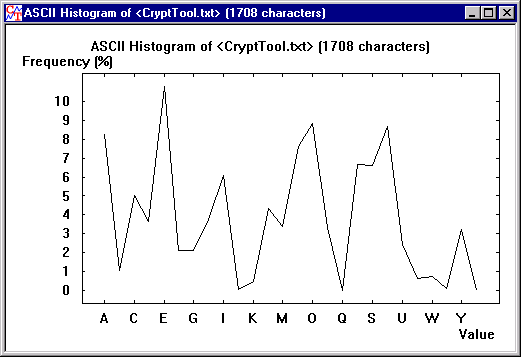
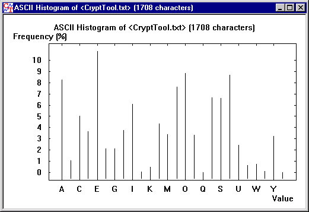

Menu icon:
The histogram for a document is displayed in this window. On opening the window, a bar chart is displayed.

The data can also be displayed as a curve by deselecting Bar Chart.

In both types of diagram the line thickness can be varied via the Bar width field in the Drawing Parameters dialogue.
The two diagrams above show the histogram of a document text. You can see, for example, that the character which occurs most frequently is "E", followed by "N".
Further information on the meaning of the histogram will be found under Viewing a histogram of the document.